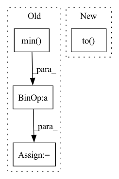

Pattern ID :31026

Before Change
heatmap = np.array(heatmap.cpu())
heatmap = cv2.resize(heatmap[0], _input.shape[2:])
heatmap = heatmap - np.min(heatmap)
heatmap = heatmap / np.max(heatmap)
return heatmap
After Change
def grad_cam(self, _input: torch.FloatTensor, _class: List[int]) -> np.ndarray:
if isinstance(_class, int):
_class = [_class] * len(_input)
_class = torch.tensor(_class).to(_input.device)
feats = self._model.get_fm(_input).detach() // (N,C,H,W)
feats.requires_grad_()
_output: torch.FloatTensor = self._model.pool(feats)
_output: torch.FloatTensor = self._model.flatten(_output)
In pattern: SUPERPATTERN
Frequency: 3
Non-data size: 4
Instances
Fragment ID: 91142719
Project Name: ain-soph/trojanzoo
Commit Name: 2bf7c2a2e8acba2592ee17d60d1a59b7bd1bbfe5
Time: 2020-11-24
Author: ain-soph@live.com
File Name: trojanzoo/model/imagemodel.py
M Class Name: ImageModel
N Class Name: ImageModel
M Method Name: grad_cam(3)
N Method Name: grad_cam(3)
M Parent Class: Model
N Parent Class: Model
M File Name: trojanzoo/model/imagemodel.py
N File Name: trojanzoo/model/imagemodel.py
M Start Line: 206
M End Line: 222
N Start Line: 190
N End Line: 212
'>
Before Change
if fixed_size is not None:
size = [fixed_size[1], fixed_size[0]]
else:
min_size = torch.min(im_shape).to(dtype=torch.float32)
max_size = torch.max(im_shape).to(dtype=torch.float32)
scale = torch.min(self_min_size / min_size, self_max_size / max_size)
if torchvision._is_tracing():
scale_factor = _fake_cast_onnx(scale)
After Change
ratio = torch.min(new_shape[0] / im_shape[0], new_shape[1] / im_shape[1])
ratio_h = torch.round(im_shape[0] * ratio).to(dtype=torch.int32)
ratio_w = torch.round(im_shape[1] * ratio).to(dtype=torch.int32)
if torchvision._is_tracing():
new_unpad = _tracing_item_onnx(ratio_h), _tracing_item_onnx(ratio_w)
else:
'>
Fragment ID: 91142708
Project Name: zhiqwang/yolov5-rt-stack
Commit Name: cd1a6ec7cda09de0dc92962a37ecb4f723a8dfeb
Time: 2022-02-03
Author: 92794867+q3394101@users.noreply.github.com
File Name: yolort/models/transform.py
M Class Name: AnonimousClass
N Class Name: AnonimousClass
M Method Name: _resize_image_and_masks(3)
N Method Name: _resize_image_and_masks(5)
M Parent Class:
N Parent Class:
M File Name: yolort/models/transform.py
N File Name: yolort/models/transform.py
M Start Line: 257
M End Line: 286
N Start Line: 67
N End Line: 77
'>
Before Change
else:
im_shape = torch.tensor(image.shape[-2:])
ratio = torch.min(new_shape[0] / im_shape[0], new_shape[1] / im_shape[1])
ratio_h = torch.round(im_shape[0] * ratio).to(dtype=torch.int32)
ratio_w = torch.round(im_shape[1] * ratio).to(dtype=torch.int32)
if torchvision._is_tracing():
After Change
scale_factor: Optional[float] = None
min_size = torch.min(im_shape).to(dtype=torch.float32)
max_size = torch.max(im_shape).to(dtype=torch.float32)
scale = torch.min(self_min_size / min_size, self_max_size / max_size)
if torchvision._is_tracing():
'>
Fragment ID: 91142709
Project Name: zhiqwang/yolov5-rt-stack
Commit Name: 1fea1a60c2517c2130d038af9d25a89f5a278873
Time: 2022-02-07
Author: zhiqwang@foxmail.com
File Name: yolort/models/transform.py
M Class Name: AnonimousClass
N Class Name: AnonimousClass
M Method Name: _resize_image_and_masks(4)
N Method Name: _resize_image_and_masks(3)
M Parent Class:
N Parent Class:
M File Name: yolort/models/transform.py
N File Name: yolort/models/transform.py
M Start Line: 59
M End Line: 75
N Start Line: 67
N End Line: 86